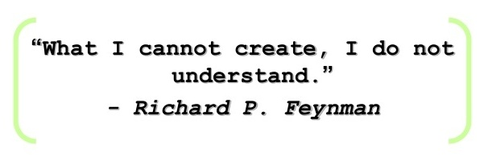

CS Ph.D. Student
Mila, University of Montreal
 My name is Yuchen Lu. I am currently a P.hD. candidate at the Mila lab of University of Montreal, supervised by Prof. Aaron Courville. Before that I received my undergraduate degree at UIUC working with Prof. Jian Peng. I was also an undergrad at Shanghai Jiao Tong University.
My fundamental research interest is language learning as systematic generalization. Humans are able to generate unseen novel utterances from a limited sample of data, while current machine learning approaches fall short on. Building an intelligent agent that is able to acquire the language as efficient as humans is the important next step as we are seeing the marginal effect of increasing model size of language models. I believe there are two main missing pieces of puzzles:
-
Humans learn the language in an embodied environment, and humans acquire language as a tool to influence the world around them. We should model situated language learning beyond learning from a static corpus.
-
Language evolves and adapts to an iterated transmission process so that it becomes structured and easy-to-acquire for the later generations. We should model this cultural evolution aspect of language in our language learning.
I enjoying seeing the impact of my research. Recently, our research team, parternered with WebDip successfully developed an AI player for the board game Diplomacy, and it’s covered in one of the most popular podcast channels in the community.
I also co-founded Tuninsight, an award-winning Montreal-based start-up.
The email is luyuchen [DOT] paul [AT] gmail [DOT] com.
Interests
- Natural Language Processing
- Emergent Commuincation
- Embodied Language Learning
Education
-
BSc in CS, 2015-2017
University of Illinois, Urbana-Champaign
-
BSc in ECE, 2013-2015
Shanghai Jiaotong University